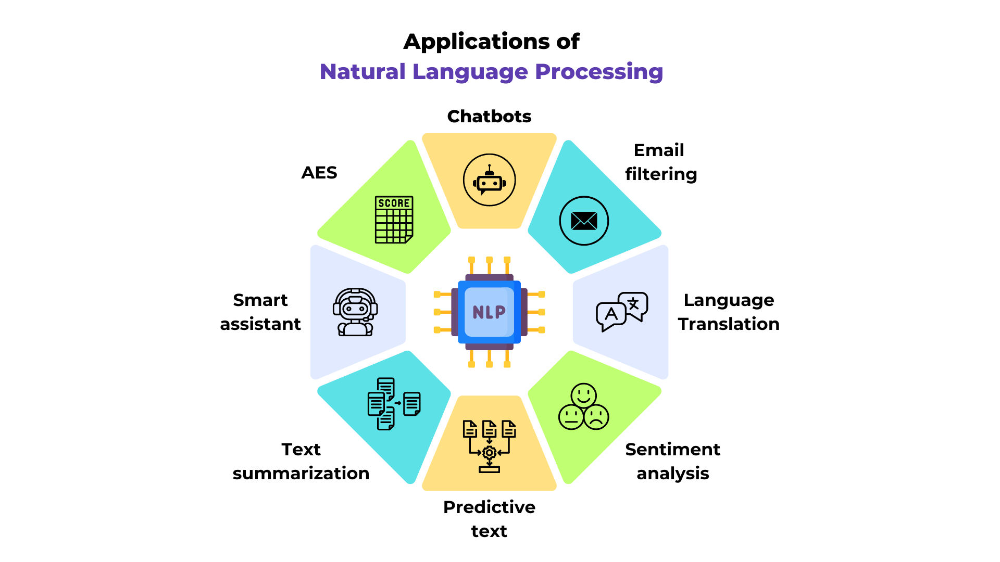

Introduction au NLP#
Qu’est-ce que le NLP ?#
Le NLP, ou traitement automatique du langage naturel (Natural Language Processing), est un domaine clé en machine learning. Il couvre diverses tâches liées au texte, comme la traduction, la compréhension de texte, les systèmes de questions/réponses, et bien d’autres.

Figure extraite du blogpost.
Le NLP se distingue dans le deep learning car il traite des données discrètes, généralement lues de gauche à droite.
Contenu du cours#
Ce cours se concentre principalement sur la prédiction du prochain token, en commençant par la prédiction du prochain caractère pour simplifier. Ce problème est à la base des modèles de langage (comme GPT, Llama, Gemini, etc.).
L’objectif est de prédire le mot suivant en fonction des mots précédents, avec un contexte plus ou moins étendu selon la méthode et la puissance du modèle. Le contexte est défini par le nombre de tokens (ou mots) utilisés pour cette prédiction.
Qu’est-ce qu’un token ? Un token est un élément d’entrée du modèle. Il peut s’agir d’un caractère, d’un groupe de caractères ou d’un mot, converti en vecteur avant d’être fourni en entrée au modèle.
Inspirations pour le cours#
Ce cours s’inspire largement de la série de vidéos d’Andrej Karpathy (lien du dépôt GitHub), notamment des cours “building makemore”. Nous proposons ici une version écrite et en français de ces enseignements. Je vous encourage à regarder cette série de vidéos, qui est l’un des meilleurs cours sur les modèles de langage disponibles à ce jour (et gratuit).
Nous structurerons ce cours en plusieurs notebooks, avec des modèles de difficulté croissante. L’idée est de comprendre les limites de chaque modèle avant de passer à un modèle plus complexe.
Voici le plan du cours :
Cours 1 : Bigramme (méthode classique et réseaux de neurones)
Cours 2 : Prédiction du prochain mot avec un réseau fully connected
Cours 3 : WaveNet (architecture hiérarchique)
Cours 4 : RNN (réseaux de neurones récurrents avec architecture séquentielle)
Cours 5 : LSTM (réseau récurrent “amélioré”)
Note : Le cours 7 sur les transformers aborde le même problème de génération du prochain caractère, mais avec une architecture transformer et sur un dataset plus complexe.
Récupération du dataset prenom.txt#
Dans ce cours, nous utilisons un dataset de prénoms contenant environ 30 000 des prénoms les plus courants en France depuis 1900 (données de l’INSEE). Le fichier prenoms.txt est déjà présent dans le dossier, il n’est donc pas nécessaire d’exécuter le code ci-dessous. Si vous souhaitez le faire, vous devez d’abord télécharger le fichier nat2022.csv sur le site de l’INSEE.
import pandas as pd
# Chargement du fichier CSV
df = pd.read_csv('nat2022.csv', sep=';')
# On enlève la catégorie '_PRENOMS_RARES' qui regroupe les prénoms peu fréquents
df_filtered = df[df['preusuel'] != '_PRENOMS_RARES']
# Pour compter, on fait la somme des nombres de naissances pour chaque prénom
df_grouped = df_filtered.groupby('preusuel', as_index=False)['nombre'].sum()
# On va trier les prénoms par popularité
df_sorted = df_grouped.sort_values(by='nombre', ascending=False)
# On extrait les 30 000 prénoms les plus populaires
top_prenoms = df_sorted['preusuel'].head(30000).values
with open('prenoms.txt', 'w', encoding='utf-8') as file:
for prenom in top_prenoms:
file.write(f"{prenom}\n")
Dans le notebook suivant, nous commencerons par analyser le dataset (caractères distincts, etc.).